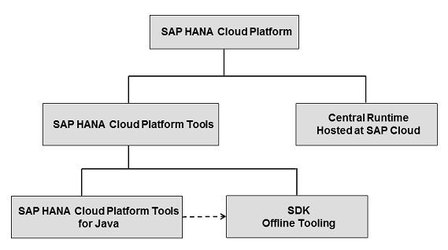

The basic tools of the SAP Cloud Platform development environment, the SAP Cloud Platform Tools, comprise the SAP Cloud Platform Tools for Java and the SAP Cloud Platform SDK.
The focus of the SAP Cloud Platform Tools for Java is on the development process and enabling the use of the Eclipse IDE for all necessary tasks: creating development projects, deploying applications locally and in the cloud, and local debugging. It makes development for the platform convenient and straightforward and allows short development turn-around times.
The SDK, on the other hand, contains everything you need to work with the platform, including a local server runtime and a set of command line tools. The command line capabilities enable development outside of the Eclipse IDE and allow modern build tools, such as Apache Maven, to be used to professionally produce Web applications for the cloud. The command line is particularly important for setting up and automating a headless continuous build and test process.
A graphical overview of this tool environment is shown below:
